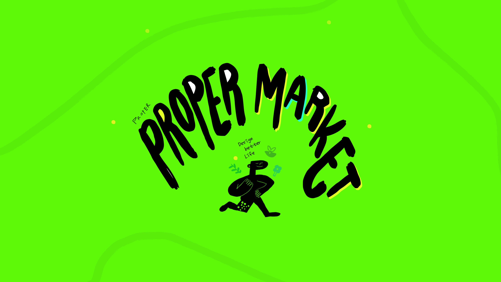

건강을 말하려는 게 아닙니다. 더 나은 삶을 설계하는 것. 행복, 함께함, 흡족함, 흥미 — 이 네 가지 감정을 기반으로 삶을 즐기는 방식 자체를 조용히 제안합니다.
함께, 행복, 흡족, 흥미. 고객의 하루가 ㅎㅎㅎㅎ가 되는 것.
⟹ 그래서 고객의 하루가 ㅎㅎㅎㅎ가 되도록.
여섯 평 남짓한 작은 샐러드 가게에서 시작했다. 많은 손님을 만나며 알게 된 것 — 사람들은 모두 건강해지고 싶지만, 시간도 부족하고 정보도 없고 복잡하다는 것.
프로퍼마켓은 오늘 하루를 기분 좋게 살아가는 선택을 돕는 곳.
독보성은 천재적인 아이디어에서 오지 않습니다.
기준의 내재화 + 견디는 시간 + 반복 실행의 축적이 만드는 조용하고 거대한 해자입니다.
브랜딩을 하지 않는 게 아닙니다. 기존 공식을 알지만 굳이 따르지 않는 것. 겉은 자유롭지만, 속에는 중심과 기준이 있습니다.
"괜찮아요"
항상 옆에 서서 "이 정도면 충분히 잘하고 있어요"라고 말해주는 친구.
"이건 제대로입니다"
제품을 고를 땐 명확하고 단호한 기준. 허락하는 친구와 상호 보완한다.
네 가지 페르소나가 공유하는 하나의 심리가 있습니다.
"외부 권위에 자기 판단을 위탁하지 않는 사람."
| Wellness | 건강을 강요하지 않는 웰니스 |
|---|---|
| Tone | 과감한 큐레이션, 예측 불가, Cool |
| Consumer Value | 가치소비 & 의식소비 |
보면 → 익숙해지고 → 따라하고 싶어진다
PROPER MADE는 단순 인증 마크가 아닙니다. "제대로"라는 개념 자체를 소유하는 것이 목표입니다.
"제대로 먹는다"는 라이프스타일 개념을 만듭니다. 상품이 아닌 기준을 제시합니다.
여론 주도자(아티스트, 셰프, 크리에이터)가 먼저 인정하고 사용합니다.
PROPER MADE 마크가 신뢰의 기호로 자리잡습니다.
| 단계 | 내용 | 시기 |
|---|---|---|
| Phase 1 | 자사 제품 적용 (서콩두, 매마샐, 소프트 프로틴) | 2Q–3Q 2026 |
| Phase 2 | 장바구니 상품 확장 (큐레이션 제품 라벨링) | 4Q 2026~ |
| Phase 3 | 외부 인증 마크 (라이센싱 수익 모델) | 2027~ |
우리가 향하는 곳은 Level 5. 전장 자체를 재설계하는 것.
프로퍼마켓의 시그니처. 서리태 콩물 그대로의 맛과 알갱이 식감으로 원물 신뢰를 전달합니다.
씻고 썰 필요 없이 매일 간편하게 마시는 샐러드. 하루 식이섬유를 한 팩으로.
서리태콩물두유 기반 자연 단백질. 12g 프로틴을 인공 첨가 없이.
넣지 않는 것들. 무엇을 넣느냐보다, 무엇을 넣지 않느냐가 더 중요합니다.